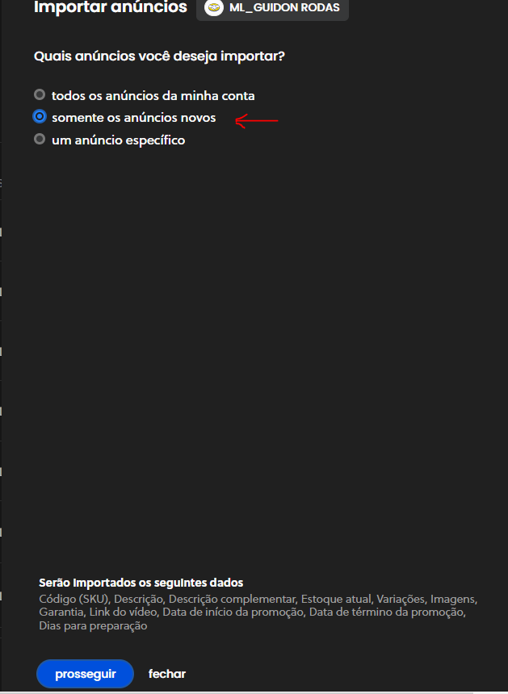
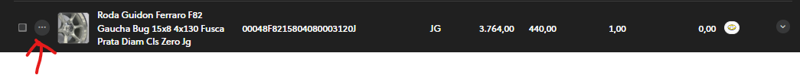
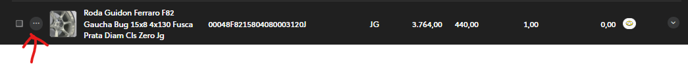

Manual de Como Utilizar o Tiny
1. Introdução
Objetivo da Apresentação é de explicar como utilizar o Tiny de forma eficiente no fluxo de trabalho da empresa.
A ideia é mostrar o uso básico do Tiny para novos usuários e também para antigos, com ou sem experiência.
Na Guidon usamos o Tiny como forma de manter o controle de estoque, entrada e saída de material, geração de NF, entre outras. Nosso uso é voltado para manter a correspondência mais fiel possível entre os produtos físicos e a tabela-mãe.
Interface do Tiny: Telas Iniciais
Para acessar o sistema é necessário usuário e senha. Solicite ao Alexandre ou TP.

Interface de Produtos no Tiny
No menu lateral, selecione Cadastros → Produtos.

Buscando produtos
Você pode buscar por título (palavra-chave) ou por SKU (código):
Por Título:

Por SKU:

Importante: ao buscar por SKU, ele deve estar completo.
Cadastro de Produtos
Formas de cadastrar:
- Manual
- Importação via Mercado Livre
1. Receber do ecommerce
2. Selecionar os anúncios novos
3. Esperar a importação

4. Relacionar anúncios com produtos


5. Criar produtos


Criar Produtos a Partir de Outros
Busque por modelos parecidos. No exemplo, usamos Rodas Gaúchas.
 

Preencha os dados principais (descrição, tipo, preço, unidade, peso líquido).
Complementares e anúncios:
Gerenciar estoque:
Preencher tipo, quantidade, preço de custo, observação.